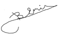

Genel Matematik
Önsöz
Genel matematik, bir matematik kültürü olarak düşünülmüştür. Lise ve üniversite hazırlık düzeyi başlangıç olarak alınarak genişletilmiştir.
Matematik, insanların doğanın karmaşık işleyiş yöntemlerini derinliğine inceleyebilmek amacı ile geliştirmeye çalıştıkları bir bilgilenme aracıdır.
Doğanın kuralları belirlendikçe, daha güvenli uçaklar, daha sağlam köprüler, gökdelenler, barajlar yapılabilir.
Matematik için,
“Doğanın eşşiz, fakat karmaşık müziği ancak bu müziği duyabilen kulaklara fısıldanır.”
denilmiştir.
1620 lerde de René Descartes, matematiğin eğitimdeki önemini belirtmek için,
“Matematik insanlığa bahşedilmiş en güçlü öğrenim aracıdır.”
ifadesini kullanmıştır
1623 de, Galileo Galilei, matemetiğin evrenin dili olduğunu,
“...evren her an gözlemlerimize açıktır; ama onun dilini ve bu dilin yazıldığı harfleri öğrenmeden ve kavramadan anlaşılamaz. Evren matematik diliyle yazılmıştır; harfleri üçgenler, daireler ve diğer geometrik biçimlerdir. Bunlar olmadan tek sözcüğü bile anlaşılamaz; bunlarsız ancak karanlık bir labirentte dolanılır.”
sözcükleri ile belirtmiştir.
Büyük önderimiz Mustafa Kemal Atatürk aynı konuda,
“ Bilim deyince, onda hakikat diye öne sürdüğü önermelerin pekin olmasını ister; pekinlik ise en mükemmel şekliyle matematikte bulunur. O halde bilim o disiplindir ki; önermeleri matematikle ifade edilir. O zaman matematiği kullanmayan disiplinler bilimin dışında kalacaklardır.”
sözcüklerini belirtmiştir.
Çağımızın ileri gelen matematikçilerinden Keith Devlin, 2013 de,
“Doğanın karmaşık yapısı, bilgisi olmayanlar tarafından görülemez. Matematik görünmez olanı görünür kılar.”
“Matematik çağımızın en büyük teknolojik gelişmesidir”
“Çağımızda matematiğin en büyük işlevi, eski yöntemlerin özümsenmesi yanında, yeni yöntemlerin oluşturulmasıdır.”
demektedir.
Bütün bu düşünceler, matematiğin gerek insanların eğitimi için, gerekse, insanların doğayı anlayabilmeleri için çok önemli olduğunu belirtmektedir.
İnsanlık için çok öemli olan matematik öğrenimi,için, yoğun ve sistemli bir çaba sarfedilmesi gereklidir. Bu çalışma çerçevesinde, uygulayacağımız, “Bilgisayar Birlikteliği ile Matematikte Gelişim”, öğrenme süresini kısaltacak, uygulamada geniş olanaklar sağlayacaktır.
Matematiği salt kuramsal bir anlayışla geliştirmek olasıdır. Oluşturulan teoremler (ussal çıkarımlarla kanıtlanmış bilgiler), yeni teoremlerin oluşturulmasında kullanılır. Bu şekilde kuramsal olarak kanıtlanmış bilgiler giderek genişler. Ama, bir uygulama kaygısı olmadığı için, elde edilen kazanımlar, “bilim için bilim” düzeyinden ileri geçemez.
Oysa matematik, insanlığın önünde açılmış olan yeni bilgi çağında, en başarılı teknolojik uygulamalardan birini oluşturmaktadır. Matematiğin gelişkin uygarlık düzeyinin her noktasında uygulama konusu ve zorunluğu vardır. Matematik uygulaması olmadan ne sosyolojik olayların değerlendirilebilmesi, ne de uzay yolculuğunu sağlayabilecek roketlerin tasarımlarının yapılabilmesi, ne de e = m c2 şeklinde madde-enerji eşdeğerliğinin belirlenebilmesi olanağı bulunamaz.
Tüm yönelimler, uygulama düşüncesi olmadan, kazanılmış matematik bilgilerinin insanlığa yarar sağlayamayacağına işaret etmektedir.
Matematiğin salt uygulamaya yönelik bir yaklaşımla ilerletilebilme olanağı yoktur. Matematik deneysel değil, ussal bir çalışmadır. Kanıtlanan her yeni teorem eski kanıtlanmış teoremlere dayanır ve yeni kanıtlanan teoremlerin taşıdığı yeni matematik düzeyi, yeni uygulama düzeylerine erişilmesini sağlar.
Gelişim diyalektik bir süreçtir. Kuramsal çalışmalardaki ilerlemeler uygulamada ileri düzeylere erişimi sağlar. Uygulamaların zorlaması da yeni kuramsal ilerlemeleri gerçekleştirir.
Bu bilgilerin ışığında, matematik hem kuramsal hem de uygulamalı düzeyde özümsenmelidir. Bu çalışmada uygulanacak yöntem bu düşünceye dayalı olacaktır. Konularımızı hem kuramsal, hem de uygulamalı olarak yansıtmaya çalışacağız. Uygulamalarımızı gelişkin bilgisayar yöntemlerinden yararlanarak gerçekleştireceğiz. Bu şekilde çağdaş hatta çağın ilerisinde bir anlayışı yansıtmaya ve kazandırmaya çalışacağız.
Tüm izleyicilerimize en içten başarı dilekleri ile ...
Prof. Dr. Bedri Doğan Emir

İletişim Adresi : bedri@bedriemir.com